Continuous outcomes: bridging a disconnected network with a mean difference
Source:vignettes/continuous-outcomes.Rmd
continuous-outcomes.RmdThis vignette is a complete worked example for a
continuous outcome: a treatment network that is
disconnected and whose trials enrolled
different populations. We reconnect it through shared
treatment components (additive cNMA) and adjust it for effect-modifier
imbalance, by two routes: the frequentist two-stage route
(cstc() / cmaic() feeding
cnma_bridge()) and the one-stage Bayesian route
(cmlnmr()). For the disconnection story in the abstract see
vignette("cpaic-disconnected-myeloma"); for the survival
analogue see vignette("survival-outcomes").
The data here are entirely simulated. The clinical setting (glucose lowering in type 2 diabetes) is used only for its vocabulary, because antidiabetic regimens are genuinely multi-component: they are built by adding agents onto a backbone. No data, effect estimate, or result below is taken from any publication. We set the true parameter values ourselves, which is exactly what lets us check whether each method recovers them.
The clinical question
The outcome is the change in HbA1c from baseline at 26 weeks (percentage points, lower is better), so the summary measure is a mean difference (MD) on an identity link.
Write Diet for lifestyle advice alone (the inactive
comparator) and use four active components: Met
(metformin), SU (a sulfonylurea), SGLT2 (an
SGLT2 inhibitor), and DPP4 (a DPP-4 inhibitor). The
evidence splits into two groups of trials that share no
treatment at all:
-
Sub-network 1, older monotherapy trials against
lifestyle advice:
DietvsMet,DietvsSU. -
Sub-network 2, newer add-on trials on a metformin
backbone:
Met+SUvsMet+SGLT2,Met+SUvsMet+DPP4.
No trial links the two groups. A guideline committee nevertheless has
to ask: how much extra HbA1c lowering do you get by adding an
SGLT2 inhibitor to metformin, compared with metformin alone?
That is Met+SGLT2 versus Met, and it crosses
the gap. No trial measured it.
The two groups of trials also enrolled different patients. Baseline HbA1c is the effect modifier: agents that act through insulin secretion lower HbA1c much more in patients who start higher, while the SGLT2 inhibitor’s effect is comparatively flat. The newer add-on trials enrolled patients with worse glycemic control than the older monotherapy trials, so the imbalance is real and it matters.
The model
Component-additive ML-NMR marries two ideas. From additive cNMA (Rücker et al. 2020, 2021) it takes the treatment-by-component decomposition, which is what lets shared components carry information across a gap that no comparator spans. From ML-NMR (Phillippo et al. 2020) it takes the integration of an individual-level model over each aggregate study’s covariate distribution, which is what makes the adjustment correct rather than ecological. The closest prior art for the combination is the Bayesian aggregate-plus-IPD cNMA of Efthimiou et al. (2022), which allows component by covariate interactions in a connected network.
Every treatment’s relative effect is the sum of its component effects, and every component effect has an interaction with the effect modifier. The estimand is therefore population-specific:
where
is the row of the treatment-by-component matrix for treatment
,
holds the component main effects,
holds the component by effect-modifier interactions, and
is the effect-modifier value of the target population.
There is no population-free relative effect here, and cpaic will not let
you ask for one: relative_effects() requires
newdata.
Because
is the vector of effects at
,
the covariate origin has to be somewhere meaningful. We therefore center
baseline HbA1c at 8.0% and work with
bhba1c_c = baseline HbA1c minus 8. An uncentered covariate
would make
the effect “at a baseline HbA1c of zero”, which is not a patient.
We pass inactive = "Diet", so lifestyle advice is coded
as the all-zero row of
and the components are read against it. When no treatment in the network
is a genuine inactive comparator, inactive = NULL selects
the unanchored component parameterization of Wigle and Béliveau (2022) instead, in which every unit
receives its own parameter and the anchor is data-driven.
treatments <- c("Diet", "Met", "SU", "Met+SU", "Met+SGLT2", "Met+DPP4")
Cmat <- build_C_matrix(treatments, inactive = "Diet")
Cmat
#> DPP4 Met SGLT2 SU
#> Diet 0 0 0 0
#> Met 0 1 0 0
#> SU 0 0 0 1
#> Met+SU 0 1 0 1
#> Met+SGLT2 0 1 1 0
#> Met+DPP4 1 1 0 0
# TRUTH (mean difference in HbA1c change, percentage points; lower is better).
beta_true <- c(DPP4 = -0.65, Met = -1.10, SGLT2 = -0.60, SU = -0.70)
# Baseline dependence: strong for the insulin-secretion agents, flat for SGLT2.
gamma_true <- c(DPP4 = -0.20, Met = -0.30, SGLT2 = -0.08, SU = -0.40)
stopifnot(identical(names(beta_true), colnames(Cmat)))Note already that SU and SGLT2 must
cross. Their component effects are
and
,
equal at
,
that is, at a baseline HbA1c of 7.69%. Below that the
SGLT2 inhibitor lowers HbA1c more; above it the sulfonylurea does. A
single population-free number would be wrong for one side or the
other.
Simulating the evidence
We hold individual patient data (IPD) for three trials and only published aggregate data (AgD) for three others. The IPD trials matter disproportionately: a component by effect-modifier interaction is identified from the covariate variation within a trial, so a trial with IPD and a decent spread of baseline HbA1c is worth far more than its sample size suggests.
gen_arm <- function(study, trt, n, mu0, hba1c_mean, hba1c_sd = 1.2,
sigma = 0.9, prognostic = -0.45) {
x <- rnorm(n, hba1c_mean, hba1c_sd) - 8.0 # centered baseline HbA1c
tc <- Cmat[trt, ]
mu <- mu0 + prognostic * x +
sum(tc * beta_true) + sum(tc * gamma_true) * x
data.frame(.study = study, .trt = trt,
.y = rnorm(n, mu, sigma), bhba1c_c = x)
}
# What a publication reports for a continuous outcome: an arm mean, its
# standard error, and a baseline-characteristics table.
agg <- function(d) data.frame(
.study = d$.study[1], .trt = d$.trt[1],
.y = mean(d$.y), se = sd(d$.y) / sqrt(nrow(d)), n = nrow(d),
bhba1c_c_mean = mean(d$bhba1c_c), bhba1c_c_sd = sd(d$bhba1c_c))
ipd <- rbind(
gen_arm("MONO-3", "Diet", 200, 0.05, 8.2), # sub-network 1
gen_arm("MONO-3", "SU", 200, 0.05, 8.2),
gen_arm("ADD-1", "Met+SU", 200, 0.10, 8.6), # sub-network 2
gen_arm("ADD-1", "Met+SGLT2", 200, 0.10, 8.6),
gen_arm("ADD-2", "Met+SU", 200, 0.00, 8.5),
gen_arm("ADD-2", "Met+SGLT2", 200, 0.00, 8.5))
agd <- rbind(
agg(gen_arm("MONO-1", "Diet", 220, 0.00, 7.6)),
agg(gen_arm("MONO-1", "Met", 220, 0.00, 7.6)),
agg(gen_arm("MONO-2", "Diet", 200, 0.15, 8.4)),
agg(gen_arm("MONO-2", "Met", 200, 0.15, 8.4)),
agg(gen_arm("ADD-3", "Met+SU", 240, 0.05, 8.7)),
agg(gen_arm("ADD-3", "Met+DPP4", 240, 0.05, 8.7)))
knitr::kable(agd, digits = 3, caption = "Aggregate arms: exactly what a paper prints")| .study | .trt | .y | se | n | bhba1c_c_mean | bhba1c_c_sd |
|---|---|---|---|---|---|---|
| MONO-1 | Diet | 0.033 | 0.074 | 220 | -0.278 | 1.200 |
| MONO-1 | Met | -0.772 | 0.085 | 220 | -0.570 | 1.259 |
| MONO-2 | Diet | 0.011 | 0.072 | 200 | 0.384 | 1.234 |
| MONO-2 | Met | -1.267 | 0.091 | 200 | 0.487 | 1.243 |
| ADD-3 | Met+SU | -2.417 | 0.109 | 240 | 0.639 | 1.164 |
| ADD-3 | Met+DPP4 | -2.372 | 0.098 | 240 | 0.672 | 1.247 |
The network really is in two pieces:
edges <- data.frame(
treat1 = c("Met", "Met", "SU", "Met+SGLT2", "Met+SGLT2", "Met+DPP4"),
treat2 = c("Diet", "Diet", "Diet", "Met+SU", "Met+SU", "Met+SU"))
g <- igraph::graph_from_data_frame(unique(edges), directed = FALSE)
igraph::components(g)$no # number of connected components
#> [1] 2Two components, so a standard network meta-analysis cannot estimate
Met+SGLT2 versus Met at all. The estimate does
not exist; it is not merely imprecise. What reconnects the network is
that the regimens are not indivisible: Met+SGLT2 and
Met share the component Met,
and Met+SU shares Met and SU with
the old monotherapy trials. Shared components become shared
parameters.
Covariate balance
Population adjustment exists because the trial populations differ. Here they differ exactly along the effect modifier:
ipd_bal <- aggregate(bhba1c_c ~ .study, data = ipd, FUN = mean)
agd_bal <- aggregate(bhba1c_c_mean ~ .study, data = agd, FUN = mean)
balance <- rbind(
data.frame(study = ipd_bal$.study, source = "IPD",
baseline_HbA1c = 8 + ipd_bal$bhba1c_c),
data.frame(study = agd_bal$.study, source = "AgD",
baseline_HbA1c = 8 + agd_bal$bhba1c_c_mean))
balance$subnetwork <- ifelse(grepl("^MONO", balance$study), 1, 2)
knitr::kable(balance[order(balance$subnetwork, balance$study), ], digits = 2,
row.names = FALSE,
caption = "Mean baseline HbA1c (%) by trial: the imbalance to adjust for")| study | source | baseline_HbA1c | subnetwork |
|---|---|---|---|
| MONO-1 | AgD | 7.58 | 1 |
| MONO-2 | AgD | 8.44 | 1 |
| MONO-3 | IPD | 8.29 | 1 |
| ADD-1 | IPD | 8.51 | 2 |
| ADD-2 | IPD | 8.50 | 2 |
| ADD-3 | AgD | 8.66 | 2 |
The add-on trials run about half a percentage point higher than the
monotherapy trials. Since the sulfonylurea effect changes by
per point of baseline HbA1c, that gap alone shifts the SU
component by roughly
points, which is twice the difference between the two add-on
agents at the covariate origin
(
versus
).
The imbalance is bigger than the thing we are trying to measure.
Ignoring it is not an option.
Setting up the data
The two routes want the data in two different shapes, and this is not an accident: it is the difference between the methods.
The one-stage Bayesian model takes the IPD as patient rows and the aggregate arms as arm rows carrying their covariate summaries. It fits the individual-level model to the IPD and integrates that same model over each aggregate study’s covariate distribution.
The two-stage frequentist route takes contrast-level
aggregate data, one row per pairwise comparison, exactly as
netmeta::discomb() does. The IPD studies appear here as
ordinary (unadjusted) contrasts; cstc() and
cmaic() then overwrite them with population-adjusted ones
before bridging.
ipd_arms <- do.call(rbind, lapply(split(ipd, ipd$.study), function(d)
do.call(rbind, lapply(split(d, d$.trt), agg))))
arms <- rbind(agd, ipd_arms)
contrast_of <- function(s, t1, t2) {
a <- arms[arms$.study == s & arms$.trt == t1, ]
b <- arms[arms$.study == s & arms$.trt == t2, ]
data.frame(studlab = s, treat1 = t1, treat2 = t2,
TE = a$.y - b$.y, seTE = sqrt(a$se^2 + b$se^2))
}
contrasts <- rbind(
contrast_of("MONO-1", "Met", "Diet"),
contrast_of("MONO-2", "Met", "Diet"),
contrast_of("MONO-3", "SU", "Diet"),
contrast_of("ADD-1", "Met+SGLT2", "Met+SU"),
contrast_of("ADD-2", "Met+SGLT2", "Met+SU"),
contrast_of("ADD-3", "Met+DPP4", "Met+SU"))
net <- cpaic_network(contrasts, ipd = ipd, sm = "MD", family = "gaussian",
ipd_covariates = "bhba1c_c", inactive = "Diet")
net
#> cpaic component network
#> Summary measure: MD
#> Treatments: 6
#> Components: 4 (DPP4, Met, SGLT2, SU)
#> AgD comparisons: 6
#> Reference: Diet
#> Inactive: Diet
#> IPD studies: 3 (gaussian; 1200 patients)
#> Connected: FALSE | components bridgeable: TRUE
cpaic_connectivity(net)
#> cpaic connectivity
#> Connected network: FALSE
#> Sub-networks: 2
#> [1] 3 treatments
#> [2] 3 treatments
#> Bridging components: Met, SU
#> Component design: rank(X) = 4 / 4 components -> all component effects identified
#> Estimable effects: 5 / 5 vs Dietcpaic_connectivity() makes the bridge explicit: the
network is disconnected, but Met and SU appear
on both sides of the gap, the component design matrix
has full rank, and so every component main effect is
identified. Hold on to the phrase “component main effect”; it is not the
same as the population-adjusted effect, and the difference is the
subject of the Results section.
plot() draws what those numbers assert.
plot(net)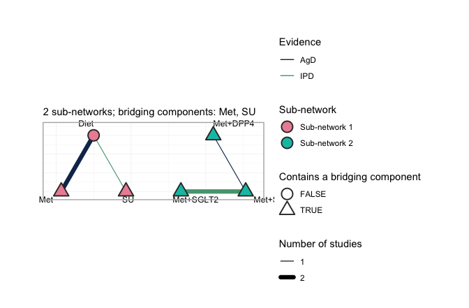
plot of chunk netplot
Each sub-network is laid out on its own circle, so a disconnected
network looks disconnected: no edge crosses from one to the other, and
no amount of standard network meta-analysis will make one appear. Edge
color records the evidence behind each comparison, separating the three
studies that carry IPD (MONO-3, ADD-1,
ADD-2) from the three that report aggregate results only.
The triangular nodes contain a bridging component; here that is every
treatment except Diet, because every active regimen
contains Met or SU, and those two components
occur on both sides of the gap. They are what the reconstruction runs
on. A shared component is a shared parameter, and a shared parameter
carries information across a gap that no comparator spans.
Two target populations
Everything below is reported in a named target population. We use two, chosen to straddle the crossover point:
target_early <- c(bhba1c_c = -0.5) # baseline HbA1c 7.5%: early intensification
target_late <- c(bhba1c_c = 1.0) # baseline HbA1c 9.0%: late intensification
# cstc() and cmaic() take the target as a named vector; the Bayesian model takes
# it as a one-row data frame. Same two populations, two calling conventions.
early <- data.frame(bhba1c_c = -0.5)
late <- data.frame(bhba1c_c = 1.0)
theta <- function(trt, x) sum(Cmat[trt, ] * (beta_true + gamma_true * x))
truth <- function(t1, t2, x) theta(t1, x) - theta(t2, x)
data.frame(
target = c("HbA1c 7.5%", "HbA1c 9.0%"),
`Met+SGLT2 vs Met` = c(truth("Met+SGLT2", "Met", -0.5),
truth("Met+SGLT2", "Met", 1.0)),
`Met+SU vs Met` = c(truth("Met+SU", "Met", -0.5),
truth("Met+SU", "Met", 1.0)),
check.names = FALSE)
#> target Met+SGLT2 vs Met Met+SU vs Met
#> 1 HbA1c 7.5% -0.56 -0.5
#> 2 HbA1c 9.0% -0.68 -1.1So the truth is that in the early population the SGLT2 inhibitor adds slightly more than the sulfonylurea, and in the late population it adds a good deal less. A method that reports one number for both is guaranteed to be wrong once.
Fitting
Route 1: the frequentist two-stage bridge
cstc() fits, in each IPD study, an outcome regression
with treatment main effects, prognostic main effects, and
treatment-by-effect-modifier interactions, with the effect modifier
centered at the target population. The treatment
coefficient is then the population-adjusted contrast, and the
interaction terms vanish at the centered origin. cmaic()
instead reweights each IPD study with
maicplus::estimate_weights() so that its effect-modifier
distribution matches the target, and reads the contrast off a weighted
model. Both then hand their adjusted contrasts to
cnma_bridge(), which runs
netmeta::discomb().
stc_early <- cstc(net, target = target_early, effect_modifiers = "bhba1c_c")
maic_early <- cmaic(net, target = target_early, effect_modifiers = "bhba1c_c",
n_boot = 200, seed = 7)
relative_effects(stc_early, reference = "Met")
#> Relative effects (MD, link scale)
#> treatment comparator estimate se lower upper z p
#> Diet Met 1.040 0.182 0.683 1.398 5.706 0.000
#> Met+DPP4 Met -0.505 0.372 -1.235 0.225 -1.356 0.175
#> Met+SGLT2 Met -0.567 0.311 -1.177 0.043 -1.821 0.069
#> Met+SU Met -0.550 0.253 -1.045 -0.055 -2.176 0.030
#> SU Met 0.491 0.312 -0.120 1.101 1.575 0.115
relative_effects(maic_early, reference = "Met")
#> Relative effects (MD, link scale)
#> treatment comparator estimate se lower upper z p
#> Diet Met 1.041 0.207 0.636 1.446 5.036 0.000
#> Met+DPP4 Met -0.557 0.435 -1.411 0.296 -1.280 0.201
#> Met+SGLT2 Met -0.541 0.396 -1.316 0.235 -1.367 0.172
#> Met+SU Met -0.602 0.310 -1.209 0.005 -1.945 0.052
#> SU Met 0.438 0.372 -0.291 1.168 1.178 0.239Two things to read off. First, cstc() and
cmaic() agree closely, which is not a coincidence and is
discussed under Results. Second, cmaic() pays for its
reweighting in precision, and the price is visible in the effective
sample size:
effective_sample_size(maic_early)
#> MONO-3 ADD-1 ADD-2
#> 264.8834 196.8659 197.4866The add-on trials sit around a baseline HbA1c of 8.5% to 8.6% and the
target is 7.5%, so matching to the target throws away real information.
The monotherapy IPD trial (MONO-3, mean 8.2%) is closer and
loses less.
forest() draws the two-stage answer.
forest(stc_early, reference = "Met")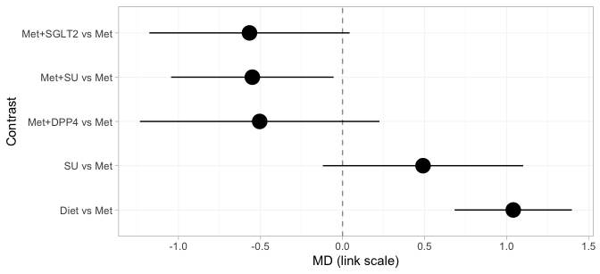
plot of chunk stc-forest
Every treatment is placed against metformin, and the subtitle records
the target population, because a cstc() fit is defined only
relative to one. Three of these rows cross the gap:
Met+SGLT2, Met+SU, and Met+DPP4
versus Met. No trial measured any of them, and they are on
the page at all only because the component design supplies them. Every
row is populated, because the bridge identifies all four component main
effects. That will not survive the move to the Bayesian model, where the
estimand is population-adjusted and the identification criterion is
correspondingly stricter.
A forest plot reports the answers but not their provenance. In a component bridge a contrast is a weighted combination of the observed edges, with weights chosen by the component design rather than by any path through the network, and it is worth knowing which edges actually carried the contrast you asked for.
suppressWarnings(
plot_edge_influence(stc_early, treatment = "Met+SGLT2", comparator = "Met"))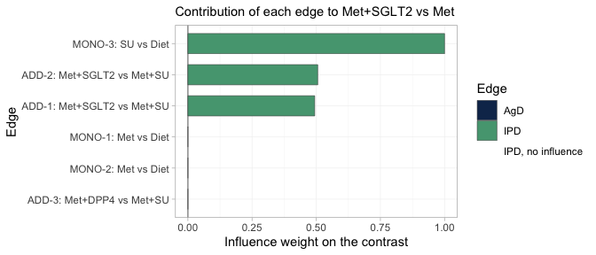
plot of chunk edge-influence
This is the bridge written out edge by edge. Met+SGLT2
versus Met reduces to the SGLT2 component
alone, and three edges carry it. The add-on trials ADD-1
and ADD-2 each supply SGLT2 minus
SU; the monotherapy trial MONO-3 supplies
SU, which cancels the unwanted SU term and
leaves SGLT2 by itself. All three edges hold IPD, and they
straddle the gap: MONO-3 sits in the monotherapy
sub-network, ADD-1 and ADD-2 in the add-on
sub-network. The two aggregate metformin trials receive no weight at
all, because Met cancels out of this particular contrast,
and ADD-3 receives none either.
Two things follow. The contrast we came for is carried entirely by edges we are able to adjust, which is the most favorable configuration population adjustment can be in. And the effective sample size above is worth reading precisely because the edges it describes have influence: reweighting an edge of zero influence cannot move the estimate, whatever its ESS reports, and no ESS will ever tell you so.
Route 2: the one-stage Bayesian model
cmlnmr() fits everything at once: the individual-level
model to the IPD, the same model integrated over each aggregate study’s
covariate distribution, and the component-additive structure that ties
the two sub-networks together. We fit a fixed-effect and a
random-effects version.
fit <- cmlnmr(ipd, agd, effect_modifiers = "bhba1c_c", inactive = "Diet",
family = "gaussian",
chains = 4, iter_warmup = 500, iter_sampling = 500, seed = 2026)
#> Chain 4 Informational Message: The current Metropolis proposal is about to be rejected because of the following issue:
#> Chain 4 Exception: normal_lpdf: Scale parameter is 0, but must be positive! (in '/var/folders/2h/yqztgsf96gsbkqn60cymgsjr0000gn/T/RtmpRgTwMG/model-c021487aa276.stan', line 123, column 19 to column 50)
#> Chain 4 If this warning occurs sporadically, such as for highly constrained variable types like covariance matrices, then the sampler is fine,
#> Chain 4 but if this warning occurs often then your model may be either severely ill-conditioned or misspecified.
#> Chain 4
#> Chain 4 Informational Message: The current Metropolis proposal is about to be rejected because of the following issue:
#> Chain 4 Exception: normal_lpdf: Scale parameter is 0, but must be positive! (in '/var/folders/2h/yqztgsf96gsbkqn60cymgsjr0000gn/T/RtmpRgTwMG/model-c021487aa276.stan', line 123, column 19 to column 50)
#> Chain 4 If this warning occurs sporadically, such as for highly constrained variable types like covariance matrices, then the sampler is fine,
#> Chain 4 but if this warning occurs often then your model may be either severely ill-conditioned or misspecified.
#> Chain 4
fit
#> cpaic: component-additive ML-NMR (Bayesian, gaussian)
#> Treatment effects: fixed
#> Effect modifiers: bhba1c_c [normal]
#> Component effects below are at the covariate origin (x = 0).
#> For a target population use relative_effects(fit, newdata = ...).
#>
#> component estimate se lower upper
#> DPP4 -0.877 0.666 -2.126 0.469
#> Met -1.095 0.083 -1.257 -0.928
#> SGLT2 -0.617 0.110 -0.825 -0.387
#> SU -0.757 0.089 -0.926 -0.581
fit_re <- cmlnmr(ipd, agd, effect_modifiers = "bhba1c_c", inactive = "Diet",
family = "gaussian", trt_effects = "random",
chains = 4, iter_warmup = 500, iter_sampling = 500,
seed = 2026, adapt_delta = 0.95)
#> Chain 4 Informational Message: The current Metropolis proposal is about to be rejected because of the following issue:
#> Chain 4 Exception: normal_lpdf: Scale parameter is 0, but must be positive! (in '/var/folders/2h/yqztgsf96gsbkqn60cymgsjr0000gn/T/RtmpRgTwMG/model-c021487aa276.stan', line 123, column 19 to column 50)
#> Chain 4 If this warning occurs sporadically, such as for highly constrained variable types like covariance matrices, then the sampler is fine,
#> Chain 4 but if this warning occurs often then your model may be either severely ill-conditioned or misspecified.
#> Chain 4
#> Warning: 4 of 2000 (0.0%) transitions ended with a divergence.
#> See https://mc-stan.org/misc/warnings for details.
#> Warning: 4 divergent transition(s) in cmlnmr(); results may be unreliable (consider
#> higher adapt_delta or more iterations).
fit_re$fit$summary("tau")
#> # A tibble: 1 × 10
#> variable mean median sd mad q5 q95 rhat ess_bulk ess_tail
#> <chr> <dbl> <dbl> <dbl> <dbl> <dbl> <dbl> <dbl> <dbl> <dbl>
#> 1 tau[1] 0.149 0.102 0.160 0.0997 0.00852 0.455 1.01 415. 563.The random-effects model adds study-arm deviations around the
component-implied relative effects (non-centered by default), with a
half-normal(0, 1) prior on the heterogeneity standard deviation
tau. With six studies and four components there are only
two degrees of freedom for heterogeneity, so tau is weakly
identified and leans on its prior. That is a real limitation, not a
fixable one, and we return to it under Model comparison. We
report the fixed-effect model as primary and use the random-effects
model as a sensitivity analysis.
A quirk of the identity link
For the identity link the aggregate likelihood is exact at
the covariate means. Integrating a linear predictor over a
covariate distribution just substitutes the mean:
.
cpaic detects this and quietly sets n_int = 1; the standard
deviation columns (bhba1c_c_sd) are carried in the
aggregate data for completeness but are not used. This is collapsibility
of the mean difference showing up in the machinery, and it is why the
continuous family is the easy one. There is consequently no
integration-error figure in this vignette:
plot_integration_error(), which traces the
quasi-Monte-Carlo error against the number of integration points in the
binary, count, and survival vignettes, declines to draw anything for a
Gaussian model with normal margins and says why, since with a single
integration point there is no integration error to trace. On a logit or
a log link the same integral is not the mean, aggregation bias appears,
and the quasi-Monte-Carlo grid earns its keep.
Priors
Every prior is recorded on the fitted object, because interaction priors do real regularization whenever is weakly identified:
str(fit$priors)
#> List of 5
#> $ intercept :List of 3
#> ..$ distribution: chr "normal"
#> ..$ location : num 0
#> ..$ scale : num 2.5
#> $ beta :List of 3
#> ..$ distribution: chr "normal"
#> ..$ location : num 0
#> ..$ scale : num 2.5
#> $ regression:List of 3
#> ..$ distribution: chr "normal"
#> ..$ location : num 0
#> ..$ scale : num 1
#> $ gamma :List of 4
#> ..$ distribution: chr "normal"
#> ..$ location : num 0
#> ..$ scale : num 1
#> ..$ df : num 4
#> $ tau :List of 4
#> ..$ distribution: chr "half-normal"
#> ..$ location : num 0
#> ..$ scale : num 1
#> ..$ df : num 4The defaults are weakly informative: normal(0, 2.5) on study
intercepts and component effects, normal(0, 1) on the component by
effect-modifier interactions and on the prognostic regression, and
half-normal(0, 1) on tau. The interaction prior is the one
to watch, because a component whose interaction is informed only by
aggregate data has little else holding it up.
Whether a prior did any work is an empirical question, and
plot_prior_posterior() answers it directly: each panel puts
the posterior, as a histogram, against the prior it was given, as a
line.
plot_prior_posterior(fit)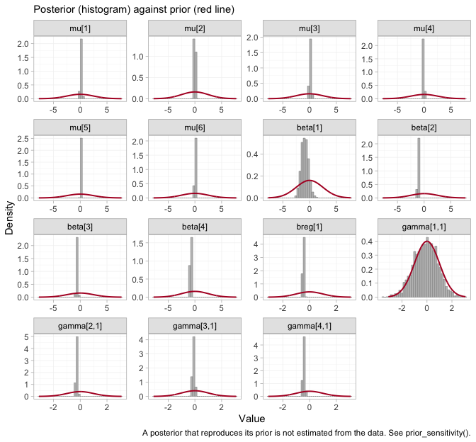
plot of chunk prior-posterior
Where a posterior simply reproduces its prior, the data have said
nothing about that parameter, and any quantity leaning on it restates
the prior rather than estimating anything. The study intercepts
mu, the component effects beta, and the
prognostic coefficient breg are all far narrower than the
priors drawn over them. So are three of the four interactions. The
fourth is not, and identifying which one, and what follows from it,
occupies much of the rest of this vignette.
Convergence
data.frame(
divergences = fit_re$diagnostics$divergences,
max_treedepth = fit_re$diagnostics$max_treedepth,
max_rhat = round(fit_re$diagnostics$max_rhat, 4),
min_ess_bulk = round(min(fit_re$fit$summary(
c("beta", "gamma", "mu", "tau"))$ess_bulk, na.rm = TRUE)))
#> divergences max_treedepth max_rhat min_ess_bulk
#> 1 4 0 1.0144 415Those are the summaries. The chains themselves are the evidence.
plot(fit, type = "trace")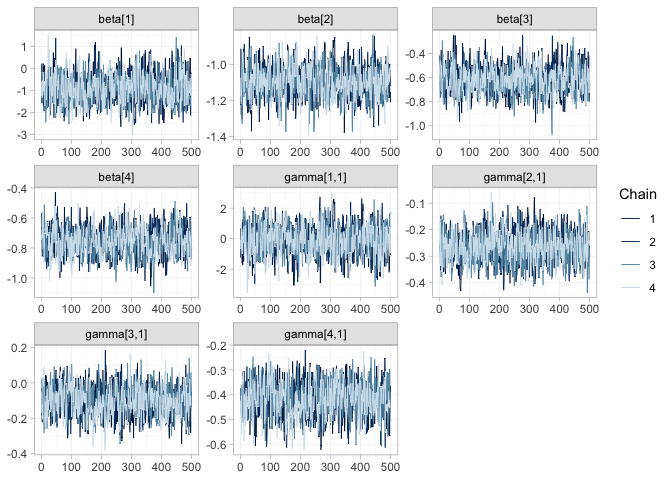
plot of chunk trace
plot(fit, type = "rhat")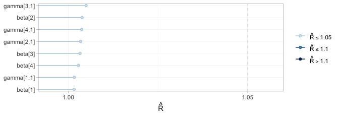
plot of chunk rhat
plot() on a cmlnmr() fit defaults to the
parameters everything downstream is built from: the component effects
beta and the component by effect-modifier interactions
gamma. The four chains are indistinguishable from one
another and show no drift, and every
falls in the lowest band of the scale, so the posterior has been
explored.
It has been explored, and that is the whole of what a traceplot can certify. Convergence is a property of the sampler, not of the evidence: a parameter about which the data say nothing converges perfectly well, and quickly, onto its prior. One of these eight parameters is exactly that, and because each panel is drawn on its own vertical scale, its trace is as clean, as stationary, and as convincing as any other on the page. Only the numbers on its axis give it away. Which parameter it is, and how to tell, is settled below by the estimability algebra and by the comparison of each prior with its posterior. No traceplot will ever settle it.
Results
What is actually estimable?
Reconnecting a network does not guarantee that the effect you want is identified. In an aggregate-data cNMA a relative effect is estimable exactly when its contrast lies in the row space of the design (Wigle et al. 2026). Population adjustment is strictly harder, because the component by effect-modifier interactions have to be identified too, and the criterion then depends on the target population. Always check, and check at the target.
estimable_effects_at(fit, newdata = data.frame(bhba1c_c = -0.5),
reference = "Met")
#> Estimability of the population-adjusted relative effects
#> Target population: bhba1c_c = -0.5
#> treatment comparator estimable identified_by basis
#> Diet Met TRUE aggregate first-order screen
#> Met+DPP4 Met FALSE none not identified
#> Met+SGLT2 Met TRUE IPD exact
#> Met+SU Met TRUE IPD exact
#> SU Met TRUE aggregate first-order screen
#>
#> Rows marked "first-order screen" are estimable by the linear criterion, which
#> is only a design-based screen for them (aggregate identification, or a
#> survival baseline) and can be optimistic. Check them with prior_sensitivity().
#>
#> Rows marked "not identified" carry no first-order information; a number
#> reported for them would be the prior. relative_effects() returns NA there.Read the identified_by column; it is doing real
work.
-
Met+SGLT2andMet+SUare identified from IPD. Their contrasts againstMetare the componentsSGLT2andSU, which are pinned down by within-trial covariate variation inMONO-3,ADD-1, andADD-2. These are the contrasts we came for, and they are honest. -
DietandSUare identified only from aggregate data. TheMetcomponent appears only inMONO-1andMONO-2, which are aggregate. A single aggregate two-arm study pins its contrast down at its own covariate mean and nowhere else; it takes two such studies at different means to trace out a slope, and that slope is a between-study gradient. Randomization identifies each trial’s own effect, but nothing randomizes the covariate means across trials, so a between-study gradient is confounded in a way a within-trial slope is not: this is ecological bias (Berlin et al. 2002). It is not the same currency as a within-trial interaction, and cpaic refuses to pretend otherwise. -
Met+DPP4is not estimable at all and comes back asNA. TheDPP4component enters through one aggregate contrast (ADD-3) and is therefore pinned at that study’s covariate mean only. A Bayesian model will happily return a healthy-looking posterior for it. That posterior is the prior speaking, andNAis the right answer.
relative_effects(fit, reference = "Met",
newdata = data.frame(bhba1c_c = -0.5))
#> Relative effects (MD, link scale)
#> Target population: bhba1c_c = -0.5
#> treatment comparator estimate se lower upper pr_gt0
#> Diet Met 0.962 0.087 0.790 1.139 1.000
#> Met+DPP4 Met NA NA NA NA NA
#> Met+SGLT2 Met -0.567 0.127 -0.801 -0.310 0.000
#> Met+SU Met -0.549 0.101 -0.736 -0.337 0.000
#> SU Met 0.413 0.140 0.145 0.701 0.997
#> NA = not uniquely estimable from this component design (see estimable_effects()).Estimability is not a property of the network alone. It is a property
of the network and the target population, so a single check at
a single target is not enough: it should be run across the range of
populations anyone might reasonably ask about.
plot_estimability() does that and tiles the result.
pop_grid <- seq(-1.0, 1.4, by = 0.2)
plot_estimability(fit, em = "bhba1c_c", values = pop_grid, reference = "Met")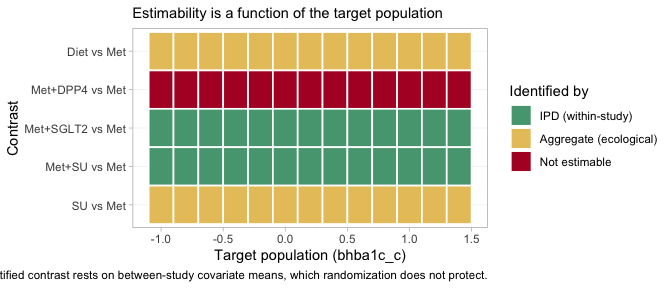
plot of chunk estimability-map
The information is in the category of each tile, not in its presence.
Three bands appear, and they correspond exactly to the three bullets
above. Met+SGLT2 and Met+SU are marked IPD
(within-study) at every target: they rest on covariate variation
inside a randomized trial. Diet and SU are
marked aggregate (ecological) at every target: they rest on the
gradient between two aggregate studies’ covariate means, and nothing
randomized those means. Met+DPP4 is not estimable
at every target.
That last row is uniform for a reason worth stating precisely. The
DPP4 interaction enters through a single aggregate study,
ADD-3, which pins the contrast at its own covariate mean
and at no other population whatsoever. The one population in which
Met+DPP4 versus Met is identified is thus the
population ADD-3 happened to enroll, which is not a
population anyone asked about, and no target on this axis coincides with
it. A Bayesian model will return a healthy-looking posterior at every
tile in that row. Every one of them would be the prior.
The cross-gap contrast, in two target populations
Now the question we came for, against Met as the
reference, in each target population, next to the truth.
report <- function(fitobj, t1, x, label) {
re <- relative_effects(fitobj, reference = "Met",
newdata = data.frame(bhba1c_c = x))
r <- re[re$treatment == t1, ]
data.frame(target = label, contrast = paste(t1, "vs Met"),
estimate = r$estimate, lower = r$lower, upper = r$upper,
truth = truth(t1, "Met", x))
}
res <- rbind(
report(fit, "Met+SGLT2", -0.5, "HbA1c 7.5%"),
report(fit, "Met+SU", -0.5, "HbA1c 7.5%"),
report(fit, "Met+SGLT2", 1.0, "HbA1c 9.0%"),
report(fit, "Met+SU", 1.0, "HbA1c 9.0%"))
knitr::kable(res, digits = 3, row.names = FALSE,
caption = "cML-NMR: recovered vs true mean differences")| target | contrast | estimate | lower | upper | truth |
|---|---|---|---|---|---|
| HbA1c 7.5% | Met+SGLT2 vs Met | -0.567 | -0.801 | -0.310 | -0.56 |
| HbA1c 7.5% | Met+SU vs Met | -0.549 | -0.736 | -0.337 | -0.50 |
| HbA1c 9.0% | Met+SGLT2 vs Met | -0.716 | -0.941 | -0.481 | -0.68 |
| HbA1c 9.0% | Met+SU vs Met | -1.174 | -1.364 | -0.977 | -1.10 |
The contrast that no trial measured, across a gap no comparator spans, is recovered; and it is recovered differently in the two target populations, which is the whole point. In the early-intensification population the SGLT2 inhibitor adds a little more than the sulfonylurea; in the late-intensification population it adds substantially less.
forest() shows the whole set of contrasts that table was
drawn from.
forest(fit, newdata = early, reference = "Met")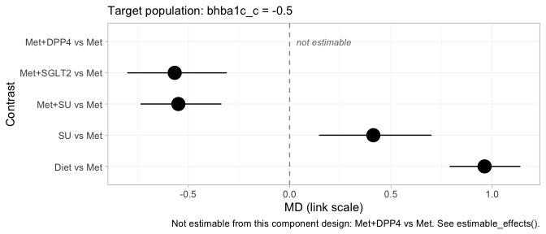
plot of chunk mlnmr-forest
Met+SGLT2 and Met+SU sit close together in
the early-intensification population, which is what the crossing of
their component effects requires, and both lower HbA1c appreciably more
than metformin alone. Met+DPP4 is drawn as an empty row
labeled not estimable rather than dropped from the figure. That
choice is deliberate. A forest plot that silently omitted the row would
look complete while concealing that the network cannot answer part of
the question put to it, and a reader would have no way to tell the two
situations apart.
Component effects and the full league table
Treatments are sums of components, so the component effects are the more primitive object, and they are where the crossover actually lives.
forest(fit, what = "component", newdata = early)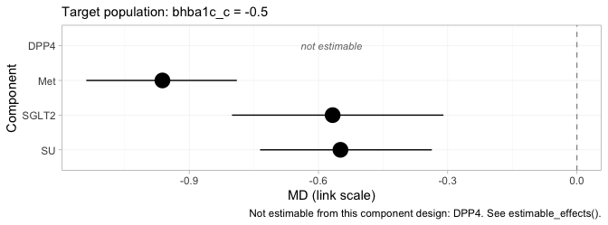
plot of chunk component-forest
Each row is the incremental effect of adding one component to a
regimen, in the early-intensification population. Met
contributes much the largest reduction, which is why it is the backbone.
SGLT2 and SU are nearly indistinguishable
here, and the near-tie between Met+SGLT2 and
Met+SU in the forest above is inherited directly from them,
since those two regimens differ only in which of the two is added to
that backbone. DPP4 is again not estimable, and it
is worth being explicit that this is a statement about the evidence and
not about the drug.
The league table gives every pairwise contrast at once, in the same population.
knitr::kable(league_table(fit, newdata = early),
caption = "League table at baseline HbA1c 7.5%: mean difference (95% CrI) of the row treatment versus the column treatment")| Diet | Met | Met+DPP4 | Met+SGLT2 | Met+SU | SU | |
|---|---|---|---|---|---|---|
| Diet | Diet | 0.96 (0.79, 1.14) | 1.53 (1.24, 1.81) | 1.51 (1.26, 1.76) | 0.55 (0.34, 0.74) | |
| Met | -0.96 (-1.14, -0.79) | Met | 0.57 (0.31, 0.80) | 0.55 (0.34, 0.74) | -0.41 (-0.70, -0.14) | |
| Met+DPP4 | Met+DPP4 | |||||
| Met+SGLT2 | -1.53 (-1.81, -1.24) | -0.57 (-0.80, -0.31) | Met+SGLT2 | -0.02 (-0.17, 0.13) | -0.98 (-1.20, -0.77) | |
| Met+SU | -1.51 (-1.76, -1.26) | -0.55 (-0.74, -0.34) | 0.02 (-0.13, 0.17) | Met+SU | -0.96 (-1.14, -0.79) | |
| SU | -0.55 (-0.74, -0.34) | 0.41 (0.14, 0.70) | 0.98 (0.77, 1.20) | 0.96 (0.79, 1.14) | SU |
The Met+DPP4 row and column are empty throughout. This
is the same refusal as before, propagated to every comparison the
treatment takes part in, and it is the correct behavior: an empty cell
here is a finding about the evidence, not a failure of the table.
The effect is a function of the target population
Since the estimand is a function of , plot it as one.
grid <- seq(-1.0, 1.4, by = 0.1)
curve <- do.call(rbind, lapply(grid, function(x) {
re <- relative_effects(fit, reference = "Met",
newdata = data.frame(bhba1c_c = x))
re <- re[re$treatment %in% c("Met+SGLT2", "Met+SU"), ]
data.frame(x = x, treatment = re$treatment, estimate = re$estimate,
lower = re$lower, upper = re$upper)
}))
curve$truth <- mapply(truth, curve$treatment, "Met", curve$x)
ggplot(curve, aes(8 + x, estimate, color = treatment, fill = treatment)) +
geom_hline(yintercept = 0, linewidth = 0.3) +
geom_ribbon(aes(ymin = lower, ymax = upper), alpha = 0.15, color = NA) +
geom_line(linewidth = 0.9) +
geom_line(aes(y = truth), linetype = "22", linewidth = 0.7) +
geom_vline(xintercept = 7.69, linetype = "dotted") +
labs(x = "Baseline HbA1c of the target population (%)",
y = "Mean difference in HbA1c change (points) vs metformin",
color = NULL, fill = NULL,
title = "A population-adjusted effect is a curve, not a number",
subtitle = paste("Solid: cML-NMR posterior mean with 95% CrI.",
"Dashed: the truth. Dotted: the true crossover (7.69%).")) +
theme_minimal(base_size = 11) +
theme(legend.position = "bottom")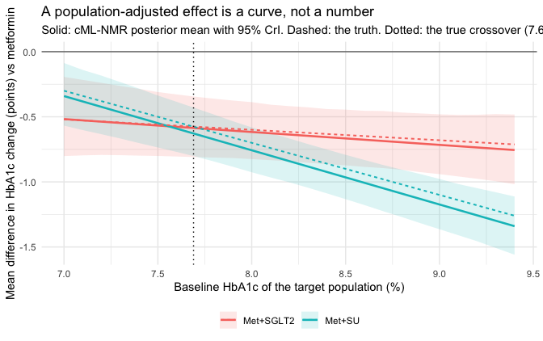
plot of chunk curve
The two curves cross close to where they should. Report a single mean difference for “adding an SGLT2 inhibitor” and you have quietly picked a population without saying so.
The hierarchy is a function of the target population too
If the effects move with the target population, so does the ordering
they induce. cpaic_ranks() builds the hierarchy in a named
population, and builds it only over the treatments that population
actually identifies. A lower HbA1c is better, so
lower_is_better = TRUE.
ranks_early <- cpaic_ranks(fit, newdata = early, lower_is_better = TRUE)
#> Warning: Dropped from the hierarchy as not estimable in this target population: Met+DPP4.
#> Ranking them would rank the prior. See estimable_effects_at().
ranks_early
#> Population-adjusted treatment hierarchy
#> Target population: bhba1c_c = -0.5
#> element estimate p_best median_rank mean_rank sucra
#> Met+SGLT2 -1.530 0.59 1 1.411 0.897
#> Met+SU -1.511 0.41 2 1.589 0.853
#> Met -0.962 0.00 3 3.003 0.499
#> SU -0.549 0.00 4 3.997 0.251
#> Diet 0.000 0.00 5 5.000 0.000
#> Not estimable in this population, so not ranked: Met+DPP4
#> Ranking metrics depend on the set ranked; report them with the effects, not instead.
plot(ranks_early)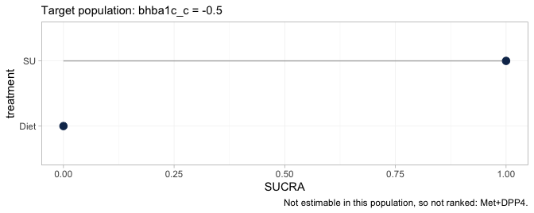
plot of chunk ranks-early
The warning is not noise; it is the result. It implements Step 3 of
the hierarchy workflow of Wigle et al. (2026): Met+DPP4 is not
estimable at this target, so it is removed from the ranking set rather
than ranked. Ranking it would rank the prior, and a SUCRA computed from
a prior looks exactly like a SUCRA computed from data while carrying
none of the evidence. The plot’s caption records what was dropped, so a
reader who sees only the figure is not misled by its absence.
Ranking metrics compress a whole distribution into one number, so it is worth looking at the distribution.
plot(rank_probs(fit, newdata = early, lower_is_better = TRUE))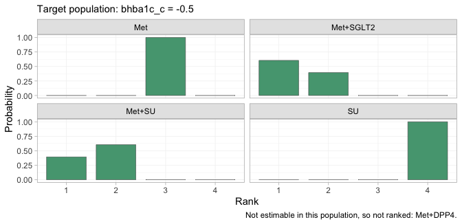
plot of chunk rankogram
The rankogram gives the posterior probability that each treatment
takes each rank. Met+SGLT2 and Met+SU divide
the top two ranks between them and take no other rank; Met,
SU, and Diet are nearly certain of ranks
three, four, and five. The lower part of the hierarchy is therefore
settled and uninteresting, and all of the uncertainty that matters is
concentrated in the contest for first place, which is precisely the
contest the crossover governs.
So the hierarchy cannot be quoted without its population either. Tracing SUCRA across target populations shows how much of it is at stake.
plot_rank_curve(fit, em = "bhba1c_c", values = pop_grid, lower_is_better = TRUE)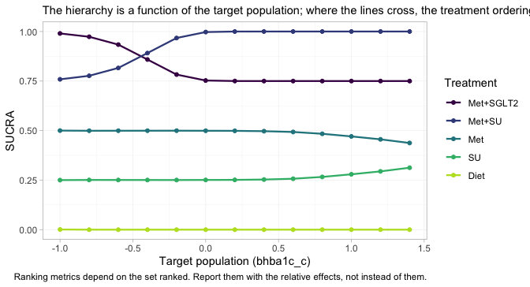
plot of chunk rank-curve
The Met+SGLT2 and Met+SU curves cross. In
lower-baseline target populations the SGLT2 inhibitor leads; in
higher-baseline ones the sulfonylurea does, and by the top of the range
its SUCRA has reached the ceiling. The crossing sits close to the
crossover of the component effects, where it has to be, because the
contrast between the two regimens is exactly SGLT2 minus
SU. Met+DPP4 appears nowhere on this figure at
any target, for the reason the estimability map gave.
A treatment hierarchy quoted without a target population is therefore not a cautious summary of this network. It is a claim about a population that has not been named, and which of these two regimens it endorses is decided by that unnamed choice rather than by the evidence.
Conditional, marginal, and why they agree here
cstc() and cmaic() do not
estimate the same thing in general.
-
cstc()reports the conditional effect at the target effect-modifier values: the treatment coefficient of a regression in which the modifiers are centered at the target. -
cmaic()reports the marginal effect in the target population: the contrast you would see from an unadjusted analysis of a trial run in that population (Phillippo et al. 2018; Remiro-Azócar et al. 2022).
For a collapsible measure the two coincide, because
averaging a linear predictor over a population and evaluating it at the
population mean give the same answer. The mean difference is
collapsible. So here cstc() and cmaic() should
agree up to sampling noise, and cpaic’s cmlnmr() (which
targets the conditional contrast
)
should agree with both.
pick <- function(x, t1) {
r <- x[x$treatment == t1, ]
c(estimate = r$estimate, lower = r$lower, upper = r$upper)
}
bayes_early <- relative_effects(fit, reference = "Met",
newdata = data.frame(bhba1c_c = -0.5))
compare <- rbind(
data.frame(method = "cSTC (conditional)",
t(pick(relative_effects(stc_early, reference = "Met"), "Met+SGLT2"))),
data.frame(method = "cMAIC (marginal)",
t(pick(relative_effects(maic_early, reference = "Met"), "Met+SGLT2"))),
data.frame(method = "cML-NMR (conditional)",
t(pick(bayes_early, "Met+SGLT2"))))
compare$truth <- truth("Met+SGLT2", "Met", -0.5)
knitr::kable(compare, digits = 3, row.names = FALSE,
caption = "Met+SGLT2 vs Met at baseline HbA1c 7.5%: three routes, one estimand")| method | estimate | lower | upper | truth |
|---|---|---|---|---|
| cSTC (conditional) | -0.567 | -1.177 | 0.043 | -0.56 |
| cMAIC (marginal) | -0.541 | -1.316 | 0.235 | -0.56 |
| cML-NMR (conditional) | -0.567 | -0.801 | -0.310 | -0.56 |
All three land on the same value, and it is the right one. Do not
carry this reassurance into the survival vignette: the hazard ratio is
not collapsible, and there cstc() and
cmaic() genuinely target different quantities.
Notice, though, how much wider the two frequentist intervals are. That is not an accident either, and it is the subject of the next section.
What the two-stage route cannot do
The two-stage route adjusts only the edges where you hold IPD. The aggregate edges enter exactly as published, at their own populations, and nothing in the machinery can move them. The two aggregate metformin trials show what this costs, because they enrolled populations 0.8 percentage points apart:
study_mean <- tapply(agd$bhba1c_c_mean, agd$.study, mean)
mono <- contrasts[contrasts$studlab %in% c("MONO-1", "MONO-2"), ]
mono$study_HbA1c <- 8 + study_mean[mono$studlab]
mono$true_effect_in_own_population <-
vapply(study_mean[mono$studlab], function(x) truth("Met", "Diet", x),
numeric(1))
mono$true_effect_at_target <- truth("Met", "Diet", -0.5)
knitr::kable(mono[, c("studlab", "study_HbA1c", "TE", "seTE",
"true_effect_in_own_population", "true_effect_at_target")],
digits = 3, row.names = FALSE,
caption = "The two aggregate metformin trials measure different things")| studlab | study_HbA1c | TE | seTE | true_effect_in_own_population | true_effect_at_target |
|---|---|---|---|---|---|
| MONO-1 | 7.575756 | -0.805 | 0.113 | -0.973 | -0.95 |
| MONO-2 | 8.435552 | -1.278 | 0.116 | -1.231 | -0.95 |
They are not disagreeing by chance. Metformin genuinely lowers HbA1c
more in the higher-baseline trial, and the two trials are each
estimating their own population’s effect correctly. But the additive
bridge has no idea that is what is happening: it sees two estimates of
“the Met component” that do not match, calls the mismatch
heterogeneity, and pays for it twice.
comp <- component_effects(stc_early)
comp$truth_at_target <- (beta_true + gamma_true * (-0.5))[comp$component]
knitr::kable(comp[, c("component", "estimate", "lower", "upper",
"truth_at_target")],
digits = 3, row.names = FALSE,
caption = "cSTC component effects vs the truth at baseline HbA1c 7.5%")| component | estimate | lower | upper | truth_at_target |
|---|---|---|---|---|
| DPP4 | -0.505 | -1.235 | 0.225 | -0.55 |
| Met | -1.040 | -1.398 | -0.683 | -0.95 |
| SGLT2 | -0.567 | -1.177 | 0.043 | -0.56 |
| SU | -0.550 | -1.045 | -0.055 | -0.50 |
additivity_test(stc_early)
#> Additive component model: fit statistics
#> Total lack of fit (Q.additive): Q = 10.209, df = 2, p = 0.00607
#> Additivity restrictions (Q.diff): not available; no standard NMA
#> is estimable on a disconnected network.
#> Note: neither statistic tests whether component effects are constant
#> ACROSS sub-networks, which is the assumption that bridges the gap.
#> That assumption is untestable from the data and must be justified
#> clinically.The bill arrives in two parts. In bias:
Met is pulled toward the value it takes in the aggregate
trials’ own populations (a mean baseline of 8.0%) rather than the 7.5%
we asked for, and DPP4 inherits the same problem through
ADD-3. In precision: the mismatch inflates
the random-effects heterogeneity, which widens every interval
in the bridge, including the two that were adjusted properly. That is
why the cSTC and cMAIC intervals in the table above are roughly twice
the width of the cML-NMR one, for the same estimand.
And note what additivity_test() is careful not
to claim. The lack of fit is real, but it is not evidence against
additivity; it is a population difference wearing heterogeneity’s
clothes. No Cochran Q can tell those apart. The one-stage model does not
need to: it integrates the individual-level model over each study’s own
covariate distribution, so the two metformin trials are
predicted to differ, and the disagreement stops being noise and
starts being information.
Prior sensitivity
Prior movement is an empirical identification diagnostic. A contrast that shifts when you halve or double a prior scale is not being driven by the data.
ps <- prior_sensitivity(fit, newdata = data.frame(bhba1c_c = -0.5),
prior = "gamma", reference = "Met",
chains = 2, iter_warmup = 300, iter_sampling = 300)
ps
#> cML-NMR prior sensitivity: gamma prior
#> treatment comparator estimate tighter looser move_tighter move_looser max_movement
#> Diet Met 0.962 0.960 0.956 0.003 0.006 0.006
#> Met+DPP4 Met -0.819 -0.961 -0.476 0.142 0.344 0.344
#> Met+SGLT2 Met -0.567 -0.579 -0.572 0.012 0.005 0.012
#> Met+SU Met -0.549 -0.552 -0.547 0.003 0.002 0.003
#> SU Met 0.413 0.407 0.409 0.006 0.004 0.006
#> estimable
#> TRUE
#> FALSE
#> TRUE
#> TRUE
#> TRUEThe IPD-identified contrasts (Met+SGLT2,
Met+SU) barely move when the interaction prior scale is
halved and doubled. Met+DPP4 is flagged as not estimable,
and its raw number moves by an order of magnitude more, which is what
“prior-driven” looks like from the outside. This is the empirical
counterpart of the algebraic check in
estimable_effects_at(), and the two agree.
The same conclusion can be reached without refitting anything, by looking at the interaction priors against their posteriors.
plot_prior_posterior(fit, prior = "gamma")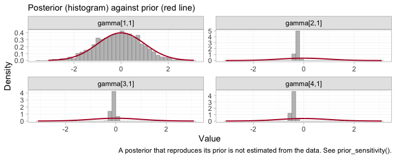
plot of chunk prior-posterior-gamma
Each panel is one component by effect-modifier interaction, indexed
by component in the order of the columns of
:
DPP4, Met, SGLT2,
SU. Three of the four posteriors are far tighter than the
normal(0, 1) prior drawn over them. The DPP4 interaction,
gamma[1,1], is the exception: its posterior lies almost
exactly on top of its prior, which is the algebraic non-identification
of the previous sections finally made visible. The aggregate study
ADD-3 constrains a combination of the
DPP4 main effect and its interaction, and leaves the
interaction itself to the prior. This is the parameter promised in the
Convergence section, whose traceplot was as well behaved as any other on
the page and told us nothing. Everything downstream that depends on
gamma[1,1], including the entirely respectable-looking
posterior a naive model would report for Met+DPP4, inherits
it.
Model comparison
loo_fixed <- loo::loo(fit)
#> Warning: Some Pareto k diagnostic values are too high. See help('pareto-k-diagnostic') for details.
loo_random <- loo::loo(fit_re)
#> Warning: Some Pareto k diagnostic values are too high. See help('pareto-k-diagnostic') for details.
loo::loo_compare(list(fixed = loo_fixed, random = loo_random))
#> model elpd_diff se_diff p_worse diag_diff diag_elpd
#> fixed 0.0 0.0 NA 4 k_psis > 0.7
#> random -0.5 0.6 0.81 |elpd_diff| < 4 4 k_psis > 0.7
#>
#> Diagnostic flags present.
#> See ?`loo-glossary` (sections `diag_diff` and `diag_elpd`)
#> or https://mc-stan.org/loo/reference/loo-glossary.html.
dic(fit)
#> Deviance information criterion
#> DIC: 3054.7
#> Mean deviance: 3039.2
#> Effective parameters (pV): 15.6
dic(fit_re)
#> Deviance information criterion
#> DIC: 3056
#> Mean deviance: 3039.3
#> Effective parameters (pV): 16.7Two things to say honestly here.
First, the LOO warning is expected and is worth understanding rather than suppressing. An aggregate arm contributes one observation (an arm mean) that stands in for hundreds of patients, so it is enormously influential, and Pareto-smoothed importance sampling flags it (high ) (Vehtari et al. 2017). That is a property of mixing IPD with aggregate data, not a bug, and it is one reason to report DIC (Spiegelhalter et al. 2002) alongside.
Second, the fixed and random models are statistically indistinguishable here, and that is the expected outcome, not a disappointment: six studies and four components leave two degrees of freedom, so the random-effects model buys flexibility the data cannot pay for. Its intervals are correspondingly wider:
w <- function(f, label) {
r <- relative_effects(f, reference = "Met",
newdata = data.frame(bhba1c_c = -0.5))
r <- r[r$treatment == "Met+SGLT2", ]
data.frame(model = label, estimate = r$estimate, lower = r$lower,
upper = r$upper, width = r$upper - r$lower)
}
knitr::kable(rbind(w(fit, "fixed"), w(fit_re, "random")), digits = 3,
row.names = FALSE,
caption = "Met+SGLT2 vs Met at HbA1c 7.5%: the price of random effects")| model | estimate | lower | upper | width |
|---|---|---|---|---|
| fixed | -0.567 | -0.801 | -0.310 | 0.491 |
| random | -0.574 | -1.035 | -0.072 | 0.962 |
Prefer the random-effects model only if you are willing to defend the
half-normal(0, 1) prior on tau, because with two degrees of
freedom that prior is doing much of the work.
LOO and DIC are summaries. The comparison can also be made without one, point by point: the dev-dev plot puts each data point’s posterior mean deviance under the fixed model against its deviance under the random-effects model.
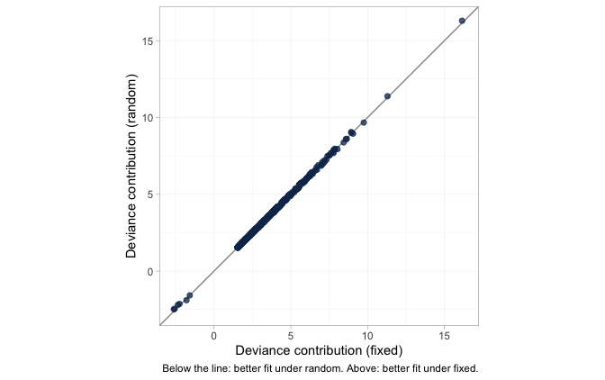
plot of chunk devdev
The cloud lies on the line of equality. Not one of the 1206 data points is fitted appreciably better by the extra parameters, which is what “statistically indistinguishable” looks like before it is compressed into a single number. It is worth having in its own right, because the LOO comparison that reaches the same conclusion is itself compromised by those high Pareto- values. The next figure shows exactly where they come from.
plot_leverage(fit)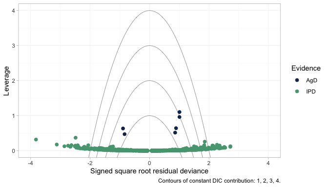
plot of chunk leverage
The six aggregate arms separate cleanly from everything else:
every one of them has higher leverage than all 1200 individual
patients. That is the arithmetic of mixing IPD with aggregate
data. An aggregate arm is a single observation standing in for hundreds
of patients, so it pulls the fit toward itself far harder than any
patient can, and leaving it out changes the posterior a great deal. High
leverage is not misfit, and none of the six lies outside the
DIC = 3 contour; they are influential without being fitted
badly. But influence of that kind is exactly what breaks leave-one-out
importance sampling, which is why the
warning appears and why it should be read as a description of the design
rather than a defect of this model.
One caution about the individual patient points. A good number of
them fall beyond the outer contours, and that is exactly what 1200 draws
from a correctly specified normal likelihood should do: an individual’s
residual deviance is a squared standard normal, so roughly one point in
twelve exceeds 3 on its own, with no misfit involved. The NICE reading
of these contours, in which a point outside DIC = 3 is
spoiling the fit, was calibrated for study-level data points, of which
there are a few dozen. Applied one patient at a time it would condemn a
perfectly healthy model.
What to take away
| Standard NMA | Two-stage (cSTC / cMAIC + bridge) | One-stage cML-NMR | |
|---|---|---|---|
| Bridges the disconnection | no | yes, via shared components | yes, via shared components |
| Adjusts the IPD edges | n/a | yes | yes |
| Adjusts the aggregate edges | n/a | no | yes, by integration |
| Reports NA when not identified | n/a | yes (main effects) | yes (at the target population) |
| Effect is population-specific | n/a | one target per fit | yes, any target from one fit |
Four things worth keeping.
The mean difference is collapsible, so this is the easy family.
cstc()andcmaic()target the same estimand and agree; the aggregate likelihood is exact at the covariate means; no aggregation bias arises. Everything gets harder on a nonlinear link, and the survival vignette shows how.Estimability is not automatic.
Met+DPP4versusMetis perfectly estimable as a component main effect and still not estimable as a population-adjusted effect, because theDPP4interaction is pinned only at one aggregate study’s covariate mean. Runestimable_effects_at()and believe what it says.NAis an answer.Not all identification is equal. A contrast identified by within-trial covariate variation (
identified_by == "IPD") and one identified by a between-study gradient across aggregate means ("aggregate") are not the same claim. The second is ecological, is confounded by everything that differs between those studies, and cpaic keeps it labeled.The bridging assumption is untestable. Reconnecting through shared components requires the component effects and their interactions with the effect modifiers to be the same in both sub-networks. There is, by construction, no cross-gap evidence with which to test that;
additivity_test()cannot do it and says so. It must be defended clinically (Veroniki et al. 2026; Rücker et al. 2021).
An honest limitation to close on. Everything above rests on baseline
HbA1c being the only effect modifier. It is not: duration of
diabetes, BMI, and renal function all plausibly modify these agents’
effects, and two of the three are differentially distributed across the
gap in any real network. cpaic will adjust for whatever you name in
effect_modifiers, and will silently assume that what you
did not name does not matter. Reconnecting a disconnected network makes
that assumption load-bearing in a way it never is inside a connected
one.